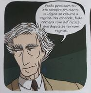

Professor Jair Donadelli — email jair.donadelli ‘arroba’ ufabc. …
Esta é uma disciplina de natureza introdutória e que não exige qualquer conhecimento prévio no estudo de lógica, porém, requer alguma experiência em alguns temas estudados habitualmente em disciplinas básicas de matemática tanto quanto alguma maturidade matemática. Nela, o estudante tem a possibilidade de experimentar o senso de rigor conceitual e de abstração formal. O conteúdo expõe alguns aspectos da interrelação entre temas de lógica, matemática e computabilidade, não são abordados aspectos filosóficos da Lógica.
Nesta edição não há atividade síncrona planejada.
Se está matriculado, atente para seu email institucional. Esta disciplina está no moodle.
ÍNDICE
Lógica Básica 2021 - 1Programação EmentaObjetivos Referências bibliográficasAtendimento Avaliação e FrequênciaFrequênciaRecuperaçãoLinks
| Semana | Tema | Subtemas | Atividades Teórico/Práticas |
|---|---|---|---|
| 01 | Apresentação | Uma visão geral de linguagem, metalinguagem, sistemas lógicos. Definição indutiva de conjuntos. | - leitura de textos - resolução de exercícios - discussão no fórum da semana |
| 02 | Sintaxe da linguagem da lógica proposicional | Alfabeto e fórmulas. Recursos metalinguisticos para simplificação, abreviaturas e omissão de parênteses. | - leitura de textos - resolução de exercícios - discussão no fórum da semana |
| 03 | Sistema dedutivo axiomático do tipo de Hilbert para a lógica proposicional. | Dedução. Axiomas e regra de inferência. Propriedades da dedução. | - leitura de textos - resolução de exercícios - discussão no fórum da semana |
| 04 | Sistema dedutivo axiomático do tipo de Hilbert para a lógica proposicional. | Exemplos. Regras derivadas.Teorema da Dedução | textos - resolução de exercícios - discussão no fórum da semana |
| 05 | Semântica da linguagem da lógica proposicional | Valoração e interpretação: uma semântica para a lógica proposicional. | - leitura de - leitura de textos - resolução de exercícios - discussão no fórum da semana |
| 06 | Metateoremas da Lógica de Proposições | Equivalência e Consequência semânticas e suas propriedades. Argumentos | - leitura de textos - resolução de exercícios - discussão no fórum da semana |
| 07 | Metateoremas da Lógica de Proposições | Consistência no sistema proposicional. | - leitura de textos - resolução de exercícios - discussão no fórum da semana |
| 08 | Metateoremas da Lógica de Proposições | Correção e completude no sistema proposicional.Decidibilidadade. | - leitura de textos - resolução de exercícios - discussão no fórum da semana |
| 09 | Metateoremas da Lógica de Proposições | Compacidade. | - leitura de textos - resolução de exercícios - discussão no fórum da semana |
| 10 | Lógica de Proposições | Outro sistema dedutivo: Dedução natural. | - leitura de textos - resolução de exercícios - discussão no fórum da semana |
| 11 | Lógica de Predicados | Sintaxe e Semantica | - leitura de textos - resolução de exercícios - discussão no fórum da semana |
| 12 | Lógica de Predicados | Sintaxe e Semantica | - leitura de textos - resolução de exercícios - discussão no fórum da semana |
| Rec | Avaliação recuperativa | - leitura de textos - resolução de exercícios - discussão no fórum da semana |
Cálculo sentencial (ou proposicional) clássico: noções de linguagem, conectivos, dedução e teorema, semântica de valorações. Cálculo clássico de Proposições de primeira ordem: os conceitos de linguagem de primeira ordem, igualdade, teorema da dedução, conseqüência sintática. Semântica: noções de interpretação, verdade em uma estrutura, modelo. O conceito formal de teoria, fecho dedutivo. Exposição informal de temas, e.g.; acerca da consistência de teorias, completude de teorias.
Introdução a alguns conceitos e teoremas da lógica clássica de primeira-ordem e, também, exposição de seus significados e usos, e.g., na atividade conceitual em matemática e computação. Explicitam-se as concepções de prova lógica, de caracterização abstrato-formal de relação e objeto, de rigor, de abstração e de linguagem.
Pretende-se estabelecer certa familiaridade com a noção de sistema lógico e, então, com uma teoria de inferência dedutiva, indicar os contornos de certos pressupostos próprios do método dedutivo. Também, a utilização da noção de verdade e métodos de semântica abstrato-formal.
[1] Notas de aula (pdf 134pp, enviem correções e sugestões, o arquivo será atualizado durante a disciplina)
[2] Augusto Franco de Oliveira. Lógica e aritmética: uma introdução à lógica, matemática e computacional. Gradiva, 2010. [511.3 OLIVlo3].
É um tanto complicado estabelecer algumas referências bibliográficas para essa disciplina por vários motivos, principalmente: a notação raramente é comum, o que pode causar muita confusão para um primeiro curso de lógica; há pouca coisa boa em português e, em geral, a abordagem não é a que buscamos. O item [2] acima é a alternativa que encontrei para contornar esses fatos, é um ótimo livro para começar a estudar lógica, porém não está disponível eletronicamente; outra alternativa, um pouco menos aderente à nossa abordagem mas ainda assim relevante, é Lógica Matemática por Rogério Augusto Dos Santos Fajardo, Edusp (2017).
Para quem quem se sente a vontade lendo em inglês recomendo, na ordem:
[3] Stefan BILANIUK, A Problem Course in Mathematical Logic (pdf)
[4] Wolfgang RAUTENBERG, A Concise Introduction to Mathematical Logic. Livro digital (exige IP da UFABC)
[5] Moedechai BEN-ARI, Mathematical Logic for Computer Science Livro digital (exige IP da UFABC)
Uma última sugestão de livro, seria o primeiro da lista porém não está disponível eletronicamente, é
[6] Richard E. Hodel, An introduction to mathematical logic [HODEin 511.3].
O atendimento se dará por meio eletrônicos. As dúvidas que dizem respeito à compreensão/entendimento do conteúdo da disciplina, aos procedimentos das atividades ou qualquer outra cuja resposta/solução/encaminhamento beneficie a todos devem ser postadas nos fóruns disponíveis no moodle. Eventualmente, e como última instância caso se mostre necessário, poderá ser agendada uma conferência online (síncrona) para tratar dúvidas.
Qualquer um pode responder a uma dúvida. Mais que isso, todos são encorajados a fazê-lo, isso contará positivamente para a avaliação (detalhes a seguir). Devem ser obseverdos princípios básicos de coordialidade e respeito com os colegas.
Casos pessoais/particulares são tratados, inicialmente, por email.
O atendimento presencial é nas sextas às 16hs (o endereço da sala está disponível no moodle).
50% Provas + 35% Listas + 15% Participações
Não haverá avaliação síncrona. É esperado uma conduta ética por parte do aluno. Aqui e aqui se tem uma boa referência do que é esperado.
As provas valerão até 50 pontos, serão 2, nas semanas 6 e 12, e individuais.
As listas (serão de 2 a 4 e divulgadas no moodle oportunamente) valerão até 35 pontos, podem ser feitas em grupo de até 6 alunos.
Os critérios de avaliação incluem
Todo encaminhamento de atividade deve ser feito pelo moodle.
As participações nos fóruns valem até 15 pontos e são avaliadas de acordo com
| critério | pontos | |
|---|---|---|
| Não participa | Não participa dos fóruns ou participa esporadicamente sem muito aprofundamento, coerência teórica, sem autoria, sem trocas de ideias e diálogos, não traz questões para o debate, não compartilha material. | 0 |
| Participação reativa | Participa dos fóruns com regularidade respondendo sem muito aprofundamento, coerência teórica, sem autoria, sem trocas de ideias e diálogos, não traz questões para o debate, não compartilha material. | até |
| Participação colaborativa | Participa dos fóruns respondendo perguntas com coerência, autoria, diálogo com os pares (coautoria), traz poucas questões para o debate e material compartilhado. | até |
| Participação interativa | O aluno participa dos fóruns com aprofundamento, coerência, autoria, diálogo como os pares (coautoria), traz questões para o debate e compartulha material com os pares. | até |
Conceito final:
| Nota | Conceito |
|---|---|
| (85,100] | A |
| (65, 85] | B |
| (50,65] | C |
| (45,50] | D |
| [0,45] | F |
A notação significa que Nota tem o conceito correspondente.
Toda semana haverá atividades simples que devem ser entregues. A execução correta da atividade acusará frequência e não contará para a nota. Não haverá devolutiva.
Tem direito a recuperação aqueles que obtiveram frequência mínima. A nota da recuperação é a média aritmética simples da notas do período regular e da avaliação recuperativa. Essa média será convertida para conceito de acordo com a tabela acima.
[i] Plataformas digitais, Biblioteca UFABC
[ii] Como ler e estudar matemática?,Ricardo Bianconi